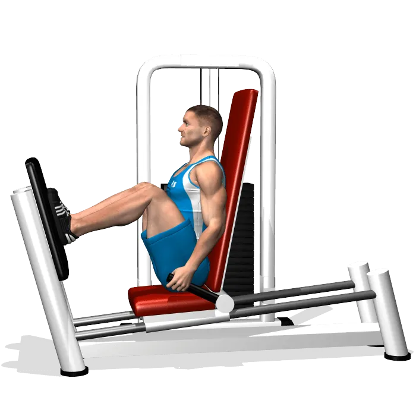

Leg Press

Consigli utili
- Regola la macchina in base alla tua altezza
- Tieni la schiena ben aderente allo schienale
- Spingi con i talloni, non con la punta dei piedi
Errori comuni da evitare
- Estendere completamente le ginocchia a fine movimento
- Inarcare la schiena
- Scendere troppo facendo staccare il bacino
Torna alla Home